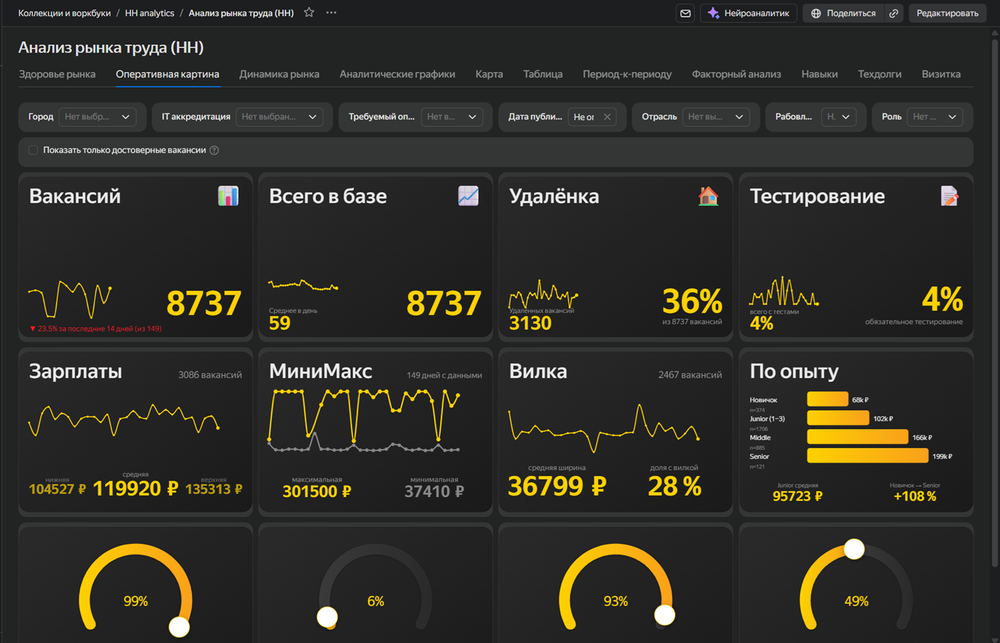

Исследую данные.
Нахожу истину.
Автоматизирую решение.
Data-консультант полного цикла: от дизайна исследования до готового инструмента. Моя задача - решить проблему, а не угодить заказчику. Результат может быть любым: отчёт, модель, дашборд, пайплайн или рекомендация «этими данными задача не решается».

Аналитика рынка вакансий - подробнее на странице «Работы»
В работе
Проектирование цифрового двойника логистической сети для крупного ритейла. Аудит данных, сборка витрин, подготовка к Greenfield-оптимизации на платформе HORIZON. Веду команду из нескольких аналитиков.
Открыт для новых проектов — готов взять в работу прямо сейчас.
Олег Борисов
Data-консультант с 8-летним опытом. Вырос из академической психологии МГУ - оттуда научный подход к данным и недоверие к «красивым графикам без выводов».
Работал с розницей, нефтегазом, IT, общепитом - от стартапов до корпораций. Строил BI-направление с нуля, управлял командами, вёл проекты от идеи до продакшена.
Сейчас консультирую бизнес и делаю исследования на стыке статистики, ML и здравого смысла.
Почему я
Научный подход к данным
Любой анализ начинаю с дизайна исследования: гипотеза, метод, границы применимости. Никаких «посчитайте корреляции» - только выводы, которые выдерживают критику.
Бизнес-эффект важнее ожиданий
Не подтверждаю гипотезу заказчика. Если данные не дают ответа - скажу прямо и предложу альтернативу. Моя репутация дороже одного довольного кивка.
От исследования до продакшена - один человек
Разбираюсь в задаче, нахожу решение и ставлю его на автопилот. Вы получаете результат, который работает, а не проект, который требует постоянной поддержки.
Технологии
Исследования и статистика
- Проверка гипотез
- A/B-тесты
- Кластеризация
- Временные ряды
- Байесовские методы
- Дизайн экспериментов
- Факторный анализ
- IRT / CTT
- Медиационный анализ
- Cross-lagged модели
Разработка и автоматизация
- Python
- pandas, numpy, scikit-learn
- pingouin, bambi, semopy
- JavaScript
- D3.js
- ETL-пайплайны
- Парсинг
- cron
- Airflow / Dagster
- Git
- REST API
BI и визуализация
- DataLens
- Qlik Sense
- Power BI
- Grafana
- Кастомные чарты на D3.js
Данные и инфраструктура
- ClickHouse
- PostgreSQL
- SAP HANA
- Greenplum
- S3
- Яндекс.Облако
- SQL
- Docker (базово)
Как я работаю
01
Аудит и переформулировка
Часто проблема не в данных, а в том, как задача поставлена. Уточняю контекст, проверяю на здравый смысл, переформулирую в проверяемую гипотезу.
02
Дизайн исследования
Выбираю метод под задачу, а не наоборот. Определяю данные, метрики, границы применимости. Слабый метод, который уместен - лучше мощного, который врёт.
03
Анализ и проверка гипотез
Сбор и обработка данных, статистические тесты, моделирование. Ищу закономерности, проверяю устойчивость выводов.
04
Результат и рекомендации
Вы получаете не «график», а ответ на вопрос: что делать, на чём основан вывод и какие есть ограничения.
01
Аудит и сбор требований
Где данные, в каком виде, кто пользователь, какие решения будут приниматься на основе результата.
02
Проектирование архитектуры
Витрины, ETL, оркестрация, выбор инструментов. Проектирую так, чтобы не развалилось через месяц.
03
Разработка и визуализация
Дашборд, кастомный чарт, автоматизированный отчёт, ML-модель - форма зависит от задачи.
04
Автоматизация и передача
Автообновление, cron, документация. Вы получаете работающий инструмент, а не файл на почту.
С чем я не работаю
Исполнительство без контекста
Ко мне не приходят с запросом «посчитайте метрику в Excel» или «сделайте дашборд по этому макету». Я решаю задачи, а не выполняю поручения. Если вам нужен просто исполнитель - я не подойду.
Работа без доступа к данным
Я не строю гипотезы из воздуха. Если данных нет, а решение нужно «прямо сейчас и хоть какое-нибудь» - это не ко мне. Я работаю с тем, что можно измерить и проверить.
Проекты с единственно правильным ответом
Я не подтверждаю гипотезу заказчика. Если задача звучит как «докажите, что мы правы» - нам не по пути. Я ищу истину, даже если она неудобна.
В обход закона и профессиональной этики
Не беру задачи, связанные с нарушением закона о персональных данных. Не паршу сайты конкурентов, если robots.txt это запрещает. Не манипулирую данными в пользу одной из сторон конфликта. Технически многое возможно - но репутация и принципы важнее.
Избранные кейсы

Сегментация сотрудников после реструктуризации
Организационные изменения на численности >100k сотрудников. Стратификация, поиск факторов, кластеризация - выделено 5 устойчивых групп. Таргетная работа HRBP с группами риска дала статистически значимый рост удержания.

Дашборд проблемных доставок
Спроектировал модель данных, собрал дашборд в DataLens. Оцифровал довозы и возвраты - суммарные потери ~1 млрд руб/год. Подсветил узкие места, разделил причины на складские и логистические. Результат: запущен корпоративный проект оптимизации цепочек.

NLP-анализ стенограмм колл-центра
Обработаны стенограммы звонков по возвратам. NLP-модель извлекла сущности, боли и плюсы - выделено 12 ключевых тем с оценкой NPS по каждой. Найдены системные проблемы в процессе возврата - запущена полная пересборка.
Часто спрашивают
С какими доменами вы работаете?
Мой мастер-домен - HR: я знаю эту функцию изнутри, от подбора до C&B. Но методы универсальны, поэтому работаю с любыми бизнес-функциями: продажи, логистика, финансы, продукт, маркетинг. Контекст нарабатывается, инструментарий уже есть.
Что если у меня нет данных - одно хотелки?
Тогда исследуем ваш запрос. Моя задача - не продать себя любой ценой, а понять, могу ли я быть полезен. Если данных недостаточно или задача нерешаема на текущий момент - честно скажу об этом. Репутация дороже одного контракта.
Чем вы отличаетесь от BI-разработчика?
BI-разработка - лишь часть моей экспертизы. Я делаю исследования академического уровня: дизайн, статистика, проверка гипотез, ML. Дашборд для меня - не финальная цель, а один из возможных инструментов. Могу построить его, а могу сказать: «дашборд здесь не нужен, давайте разберёмся в причинах».
Сколько стоит?
Стоимость зависит от задачи. После аудита называю фикс, а не часы. Подробнее - на странице «Прайс».
Как оформляется сотрудничество?
Работаю по договору ГПХ или как самозанятый. Готов рассмотреть другие варианты, если ваши процессы требуют иного оформления. С фриланс-биржами и платформами-посредниками не работаю.
Справитесь ли вы один с крупным проектом?
Если проект требует компетенций за пределами моей экспертизы - могу подключить проверенную команду: дата-аналитики, инженеры данных. Я остаюсь точкой входа и отвечаю за результат. Вы не управляете командой - вы работаете со мной.
Как быстро?
Зависит от типа задачи, сложности извлечения данных и этапов согласования. От 2 недель до 6 месяцев для крупных проектов. Готов рассмотреть и более длительные сроки. В любом случае сроки фиксируются в договоре до принятия обязательств сторонами.
Вы даёте гарантии на результат?
На результат влияет не только моя работа, но и инфраструктура, качество данных, железо. Я гарантирую корректность методологии и прозрачность выводов. Если после сдачи обнаружатся проблемы - возвращаюсь к проекту в рамках доработок, без дополнительной оплаты.
Что если моя ниша нестандартная?
Таких нет. Данные - это просто данные. Если предметная область действительно редкая - со стороны заказчика потребуется включённость предметного эксперта. Я закрываю методологию и технику, эксперт помогает с контекстом.
Обсудим задачу?
Напишите мне в Макс - опишите, что беспокоит. Я скажу, можно ли на это ответить данными и как подступиться.
Написать